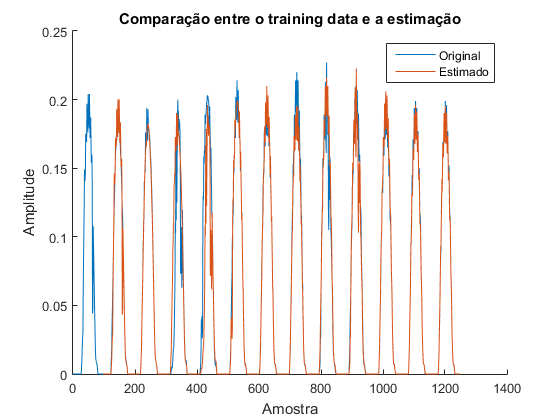
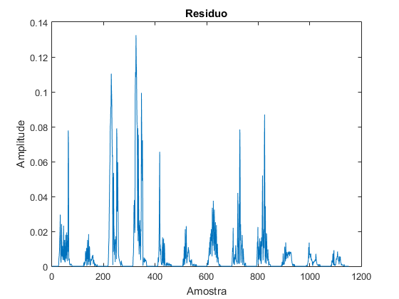
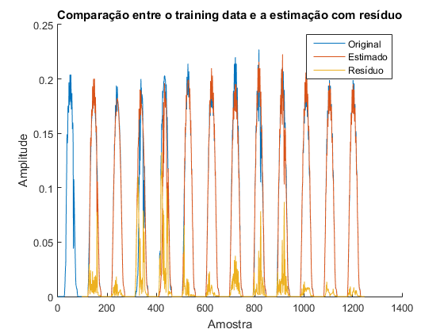
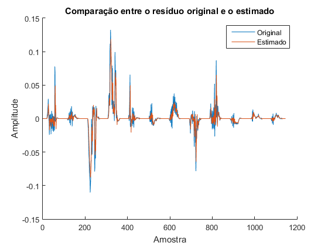
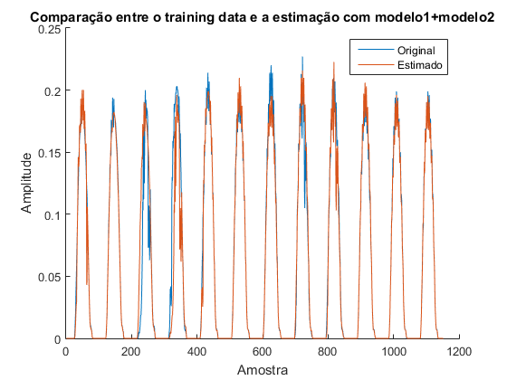
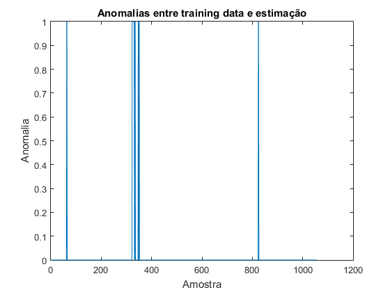

Contents
%%%%%%%%%%%%%%%%%%%%%%%%%%%%%%%%%%%%%%%%%%% % Quarto trabalho de laboratório de PDS % 2020/2021 % % Turno de 3ªfeira 14h % % Grupo 38 % João Silva 90803 % Vasco Araújo 90817 %%%%%%%%%%%%%%%%%%%%%%%%%%%%%%%%%%%%%%%%%%% close all; clear;
P1
1a
type('LongTermEstimate');
function [ a ] = LongTermEstimate( x, N ) %LONGTERMESTIMATE Calcula o parâmetro "a" para o modelo de longa duração % Partindo do principio que o sinal x tem algum tipo de periodicidade com % período N, consegue-se estimar x(n) sabendo o paramêtro "a" e x(n-N). Y = x(N+1:end); H = x(1:end-N); a = (H'*H)\H'*Y; end
Comentário Este é um problema no qual queremos minimizar norm(Y-H*a)^2, ou seja é um problema de Least Squares. A solução para a estimativa de "a" é conhecida e é dada por a = inv(H'*H)*H'*Y. Assim, para estimar o valor de "a" apenas temos que construir a matriz H e o vetor Y com base no sinal x e no delay N. Analisando a matriz H dada nas aulas teóricas pode-se ver que este é um caso particular do apresentado nos slides, em que em vez de termos acesso aos últimos N elementos para estimar o atual, usa-se apenas x(n-N) para calcular x(n). Assim, Y vai do instante N+1 até ao final do sinal (parte de N+1 pois é o primeiro instante para o qual temos informação do que sucedeu a N instantes atrás). A matriz H vai ser apenas um vetor com os valores de x, desde a primeira amostra até à ultima-N amostra, uma vez que esta é a última amostra que tem N amostras à frente, ou seja, é a última amostra que vai ser usada para estimar x(n-N), no caso em que n = end (comprimento do vetor x). Para obter a fazemos apenas o cálculo matricial.
1b
N = 96; %Faz load do sinal de teste load('energy_train.mat'); %Calcula o parâmetro a a = LongTermEstimate(x_train, N); %Criação da estimação x_est = a*x_train(1:end-N); %Residuo é o sinal original menos a estimativa res = x_train(N+1:end)-x_est; %Fazer os plots figure(); hold on; plot(1:length(x_train), x_train); plot(N+1:length(x_train), x_est); legend('Original', 'Estimado'); title('Comparação entre o training data e a estimação'); xlabel('Amostra'); ylabel('Amplitude'); figure plot(abs(res)); title('Residuo'); xlabel('Amostra'); ylabel('Amplitude'); figure hold on plot(1:length(x_train), x_train); plot(N+1:length(x_train), x_est); plot(N+1:length(x_train), abs(res)); legend('Original', 'Estimado', 'Resíduo'); title('Comparação entre o training data e a estimação com resíduo'); xlabel('Amostra'); ylabel('Amplitude');  
Comentário Como se pode observar apenas há estimativa a partir da amostra N (96 neste caso), uma vez que é necessário ter acesso à amostra (n-N) para estimar o instante n. Observando os plots obtidos conseguimos ver que em geral a estimativa segue a realidade, sendo confirmado pelo facto do valor absoluto dos resíduos ter uma amplitude reduzida (0.02 a 0.06). No entanto, há zonas onde a estimativa não é boa, o que se reflete na amplitude dos resíduos. Quando há irregularidades no sinal, N amostras à frente vai haver um erro de estimação o que leva a este aumento no resíduo. Para demonstrar este fenómeno considera-se por exemplo o troço do sinal entre a amostra 60 e 70. Este troço tem um pico que parece não seguir o andamento normal do sinal, e estre pico não aparece no sinal real N amostrar à frente. No entanto, como a nossa estimativa para o sinal no instante n é apenas o sinal no instante n-N vezes um coeficiente, a estimativa N amostras à frente do troço irregular vai ser também um pico, o que causa um aumento na amplitude do resíduo nesse instante.
1c
fprintf('Coeficiente: %f\n', a); fprintf('Energia do resiudo: %f\n', sum(res.^2)); fprintf('Energia do residuo por amostra %f\n', sum(res.^2)/length(res));
Coeficiente: 0.980971 Energia do resiudo: 0.347831 Energia do residuo por amostra 0.000302
Comentário Como se pode ver o coeficiente "a" é bastante próximo de 1. Isto é de esperar uma vez que se considerou que o sinal é periodico, com período N, querendo dizer que no sinal perfeito x(n) = x(n-N). Como é dito no enunciado o sinal representa a produção de energia de um painel solar residencial, sendo óbvio assim que se espera que o sinal tenha valores muito semelhantes desfazados de 1 dia (N=96). A energia do resíduo é obtida fazendo a soma do quadrado do sinal, resultando no valor de 0.347831. Dividindo pelo número de amostras do resíduo consegue-se obter a energia por amostra (0.000302).
1d
type('ShortTermEstimate.m');
function [ a ] = ShortTermEstimate(r, p)
%SHORTTERMESTIMATE Summary of this function goes here
% Detailed explanation goes here
x_ = r(p+1:end);
H = zeros(length(r)-p, p);
%Construir a matriz H
for i=1:p
for j=1:length(r)-p
H(j, i) = r(p-i+1 + j-1);
end
end
a = (H'*H)\H'*x_;
end
Comentário O cálculo dos parametros é feito de um modo semelhante ao feito na alinea 1a, sendo que agora não utilizamos apenas a amostra N instantes atrás, usando antes as últimas P amostras para estimar a amostra atual do resíduo. O vetor Y passa a ser assim o sinal r da amostra p+1 até à ultima. A matriz H agora é construída de maneira a que cada linha possua as amostras necessárias para estimar um dado valor de r. Com p = 6, para estimar o instante 7 é necessário 6 amostras, a linha de H correspondente a n=7 vai ser [x(1) x(2) x(3) x(4) x(5) x(6)]. Construíndo a matriz H deste modo é possível depois realizar o mesmo cálculo que na primeira alinea, resultando em p coeficientes a partir dos quais conseguimos estimar qualquer instante.
1e
p = 6; a = ShortTermEstimate(res, p); res_est = zeros(length(res)-p, 1); for i=p+1:length(res)-p for j=1:p res_est(i-p) = res_est(i-p) + a(j)*res(i-j); end end %Fazer os plots figure(); hold on; plot(res(p+1:end)); plot(res_est); legend('Original', 'Estimado'); title('Comparação entre o resíduo original e o estimado'); xlabel('Amostra'); ylabel('Amplitude'); figure hold on; plot(x_train(N+1:end)); plot(x_est+res_est(end-p-1)); legend('Original', 'Estimado'); title('Comparação entre o training data e a estimação com modelo1+modelo2'); xlabel('Amostra'); ylabel('Amplitude'); 
Comentários Analisando a primeira figura consegue-se ver que a estimativa do resíduo segue o sinal real bem. Na segunda figura consegue-se observar a combinação dos dois modelos num só, isto é usa-se a estimativa do resíduo obtida para melhorar a estimativa do sinal de energia x. Como se pode observar isto resulta numa melhor estimativa do sinal x, ou seja o novo residuo (diferença entre sinal real e nova estimativa) vai ter uma menor amplitude.
1f
e = res(p+1:end)-res_est; fprintf('Coeficientes:\n'); disp(a'); fprintf('Energia do resiudo: %f\n', sum(e.^2)); fprintf('Energia do residuo por amostra %f\n', sum(e.^2)/length(e));
Coeficientes:
0.5993 0.1496 -0.0031 0.2730 -0.1552 -0.0279
Energia do resiudo: 0.124777
Energia do residuo por amostra 0.000109
Comentário Como se pode ver, ao contrário do que acontecia com o coeficiente na alinea 1b, os coeficientes que relacionam o sinal com o residuo N amostras à frente não são todos próximos de 1. Como vemos também, há amostras com maior peso que outras, por exemplo a(1) é muito maior que a(3), o que resulta na amostra r(n-1) tem mais influência na estimativa do que r(n-3). Assim se apenas fosse possível ter acesso a algumas amostras em vez de 6, poderiam ser descartadas r(n-3) e r(n-5) que a estimativa final não diferia muito uma vez que estes coeficientes estão muito próximos de 0 comparando com os restantes. Quanto à energia do novo resíudo, comparando com a do resíduo original vemos que diminuiu para cerca de um terço da original, o que faz sentido uma vez que com a combinação dos dois modelos se tem uma melhor estimativa do sinal. A energia por amostra obviamente diminui também.
2a
type('AnomaliesDetector.m');
function [ anomaliesArray ] = AnomaliesDetector(t, p)
%mean absolute deviation
threshold = mad(t);
anomaliesArray = zeros(length(t),1);
for i=1:length(t)
difference = t(i) - p(i);
if (difference > threshold)
anomaliesArray(i) = 1;
end
end
end
Comentário De modo a detectar anomalias entre o vetor de tempo e as previsões passadas necessário computar qual a variação entre os dois. Uma maneira eficaz de detectar essa diferença é através do desvio médio absoluto, ou seja, computar a diferença entre a amplitude do vetor de tempo e a previsão a cada instante de tempo e, se for maior que o desvio médio absoluto, marcar aquele instante de tempo como uma anomalia.
2b
load('energy_train.mat'); N = 96; a_long = LongTermEstimate(x_train, N); x_est = a_long*x_train(1:end-N); anomaliesLong = AnomaliesDetector(x_train(N+1:length(x_est)), x_est); num_long = 0; for i=1:length(anomaliesLong) if anomaliesLong(i) == 1 num_long = num_long+1; end end figure; plot(anomaliesLong); title('Anomalias entre training data e estimação'); xlabel('Amostra'); ylabel('Anomalia'); load('energy_test.mat'); p = 6; res = x_train(N+1:end)-x_est; a_short = ShortTermEstimate(res, p); res_est = zeros(length(res)-p, 1); for i=p+1:length(res)-p for j=1:p res_est(i-p) = res_est(i-p) + a_short(j)*res(i-j); end end anomaliesShort = AnomaliesDetector(res(p+1:length(res_est)), res_est); num_short= 0; for i=1:length(anomaliesShort) if anomaliesShort(i) == 1 num_short = num_short+1; end end
Comentário Vê-se claramente uma diferença entre os dois modelos. Usando o modelo short detectaram-se 116 anomalias enquanto que usando o modelo long apenas se detectaram 18. Isto faz sentido, pois o modelo short apenas usa os dados mais próximos no tempo enquanto o que faz com o modelo responda mais agressivamente a variações. Isto faz com que, apesar de poder seguir mais fielmente o plot real, fica mais sensível a outliers nos dados e portanto irá ter mais anomalias.
2c
Comentário Uma possível solução seria interpolar os dados com anomalias usando informação do passado.